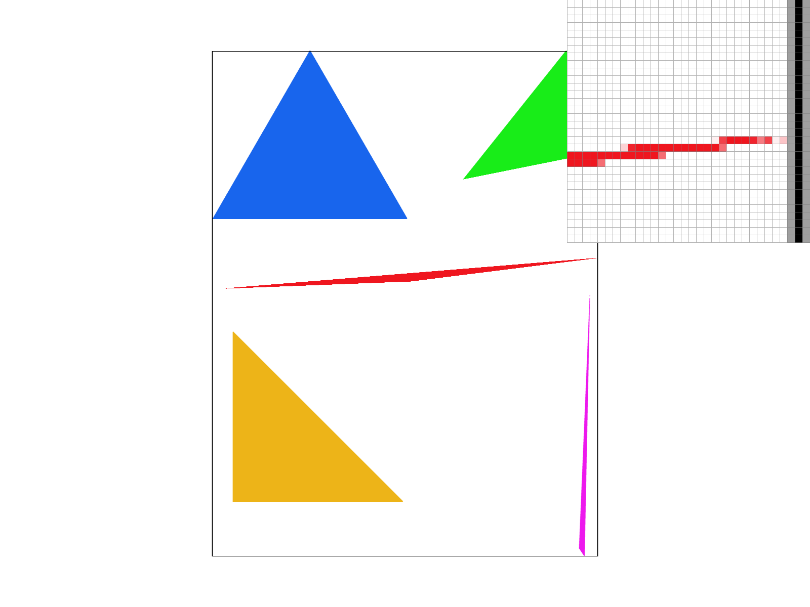

Overview
In this homework, I implemented a basic rasterizer. Its functionality begins with the rasterization of basic triangles, with a basic 1 sample per pixel rate. This functionality was enhanced by the implementation of various anti-aliasing features, such as super sampling at up to 16 samples per pixel. Then I implemented hierarchical transforms for these rasterized triangles. Finally we implemented basic texture mapping utilizing a various kinds of interpolation, and techniques in linear algebra and transformations. I had to think a ton about the nuances of linear transformations, mapping, and had to rebuild my intuition for geometry throughout the course of the project. Despite not being entirely successful, this was a thoroughly satisfying project.
Section I: Rasterization
Part 1: Rasterizing single-color triangles
I rasterize triangles by first finding the bounds of the bounding boxes for the given triangle. This allows us to significantly minimize the pixels we must iterate through in order to rasterize the image. After this, we iterate through each pixel in the bounding box, checking whether the center of the pixel is in the given triangle. This is done by using a point-in-triangle test, wherein we perform a series of computations to find 3 line equations representing each side of the triangle, after which we can check whether or not the point is contained within those bounds. Thai process is repeated in the code for the opposite winding direction, where the direction of each line which represents each side of the triangle is flipped. The given algorithm iterates through each pixel in the bounding box, and performs the above computations for each pixel. As such, the algorithm is no worse than one that iterates through the entire bounding box for a triangle.
Here is an example 2x2 gridlike structure using an HTML table. Each tr is a row and each td is a column in that row. You might find this useful for framing and showing your result images in an organized fashion.
|
|
Part 2: Antialiasing triangles
I then modify the algorithm from part 1 in order to accommodate supersampling. Supersampling functions by taking multiple samples at each pixel, and checking their color values. A average is then performed using these values in order to determine the shade of the entire pixel the sub pixels constitute. As a note, my supersampling algorithm was informed by ChatGPT. In particular, the looping logic for the internal for loops which iterate through the subpixels, as well as section them off was informed by ChatGPT. However, ChatGPT made significant indexing errors, particularly when it came to handling the sample rate correctly and splitting the pixels accordingly. With that being said, my supersampling algorithm functions as follows. Two additional for loops are added within the outer for loops from Part 1, which iterate through all the pixels in the bounding box. These loops split each pixel in the bounding box in accordance with the sample rate and iterate through them. The point-in-triangle logic is modified, then, to check whether each sub-pixel is within the triangle. After doing this, the sub pixel is added to the sample buffer. Here we will have a quick aside about the sample buffer. Previously, we were writing directly to the frame buffer, meaning there was little need for the sample buffer. However, now we are taking significantly more samples, meaning it serves us well to have an appropriately sized sample buffer to populate and then later downsample. As such, prior to this function, we have initialized a sample buffer sample_rate times the size of the frame buffer. Similar adjustments to the sample_buffer size and the rate are made anywhere else the sample_buffer is resized, such as in resize_sample_buffer and set_sample_rate We continue to fill the sample buffer with each subpixel. Now there is a frame buffer which has more datea points than pixels in the frame buffer. We must now downsample this to the size of the frame buffer. Then in resolve_to_framebuffer I iterate through each pixel in the frame buffer, and take the appropriate number of corresponding color values from each sub-pixel in the sample buffer. These colors are then averaged to find the final color of the larger pixel which is now written to the frame_buffer which we see. These modifications were made to antialias our triangles. Supersampling allows our triangles to have softer borders since more pixels which may have been entirely excluded before have some light coloration now since subpixels of theirs may be within the triangle when the center of the pixel may not have been. This means that our borders look smoother and less “stepped.”
|
|
|
|

|
As you can see in these pictures, the corner of the triangle gets smoother as the sample size increases. This is because as more samples are taken, more pixels previously excluded since the center of them was not within the bounds of the triangle are now slightly colored to account for the subpixels that may have been. This makes for a smoother, more accurate, less disjoint image as more samples are taken.
Part 3: Transforms
Here cubeman is seen turning his arm into a spear, poised and ready to hunt down cube mammoth.
Section II: Sampling
Part 4: Barycentric coordinates
Barycentric coordinates are a coordinate system for triangles, wherein each point within the triangle is an interpolation of the values at each vertex. This is best illustrated by the triangle below from https://commons.wikimedia.org/wiki/File:Barycentric_RGB.svg.

|
Here each vertex has a value of pure red, green, or blue, respectively. Each point within the triangle, then is a weighted average of the colors at each vertex in terms of their distance from each vertex. This allows for the smooth blending of one color into another.
Part 5: "Pixel sampling" for texture mapping
In part 5, I implemented pixel sampling in service of texture mapping. The first approach I implemented was nearest pixel sampling. This approach takes a pixel in pixel space and finds the closest pixel to it in texture space, and color the pixel accordingly. This allows us to achieve smooth color gradients in accordance with different textures for accurate images in the frame buffer. The second approach was bilinear pixel sampling. This is a similar process, except we are taking the four closest pixels in texture space using barycentric coordinates in pixel space. We then perform three sets of linear interpolations, the first one is between the top two pixels, the second one is between the bottom two pixels, and the final one is between the values given by the first two interpolations. This allows for a more accurate, softer set of colors, similar to what supersampling does for us above.
|
|
|
|
|
|
Here is a set of four images with various sampling rates and pixel sampling kinds. As we can see, the pixels are more sparse, and disjoint with fewer smooth transitions from pixel to pixel when doing nearest pixel sampling. However, when we are sampling using bilinear pixel sampling, we can see that there are smoother transitions between pixels, and the images in general is smoother and bolder, albeit a bit blurrier. This goes to show that bilinear pixel sampling tends to aid with antialiasing of smaller details, such as the tip of this spiral highlighted in the images above, but can make an image as a whole appear blurry and vague.
Part 6: "Level sampling" with mipmaps for texture mapping
In part 6, I attempted to implement level sampling, wherein bilinear sampling occurs but it now happens between levels as well to approximate a mipmap level which best suits the image. I ran into a few roadblocks here which I did not fully resolve. For one, I think that the toggle between bilinear and nearest pixel sampling does not function completely correctly, since little difference is observed between bilinear and nearest pixel methods at level 0 sampling. Beyond this, there are obvious issues with different kinds of level sampling, as the image is incorrectly displayed for bilinear level sampling. That being said, I will outline my approach. In order to perform level sampling, I wrote a new sampling function which takes in a set of parameters, which includes the kinds of sampling we will perform (both at a pixel and level sampling level). Sample is then used as a kind of switch, and the appropriate helper function is called to find the correct sample. When level sampling, we use one of these helpers to find the closest sample using our barycentric coordinates from before, as well as the difference between it and other nearby triangles. Once the nearest level is found, we can then sample above or below it and perform interpolation between the levels to find the appropriate color for a pixel if we are doing linear level sampling. If we are doing nearest level sampling, we simply leave the current sample at that nearest level. As far as the three kinds of adjustments we can make, there are a few important differences between them as far as speed, memory, and antialiasing power goes. As we increase the sampling rate, antialiasing power increases significantly, but significantly more memory is required, meaning speed decreases as well. Similarly, doing more complex forms of pixel sampling, with the least complex being nearest pixel and the most complex being bilinear sampling, more memory is required, but not as much as with increasing sampling rates, and speed decreases while antialiaisng performance increases. Finally, we notice a similar pattern for level sampling, ideally. The least complex level is zero level sampling, followed by nearest level sampling, and finally bilinear level sampling. Antialisasing performance increases as we increase in complexity, as does memory usage (less of an impact than with supersampling) and speed also decreases.
|
|
|

|
|
Section III: Art Competition
If you are not participating in the optional art competition, don't worry about this section!